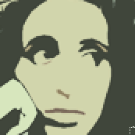

Jody Culkin

Jody Culkin is a professor in the Media Arts and Technology Department. She is an artist who's work combines sculpture with microcontrollers and multimedia. She has had numerous exhibits including at the Bronx Museum of Art and Comune di Roma Palazzo delle Esposizioni, Rome, Italy. Animation is another passion of hers, she regularly attends Comic Con, and is knowledgeable about different animation styles and techniques.
Christopher Stein

Christopher Stein is an Associate Professor in the Media Arts and Technology Department. He teaches a variety of courses, from introductory multimedia to advanced multimedia programming. Prior to teaching at BMCC he was a principle at a small new media production company where he worked on every aspect of multimedia projects including Web sites, interactive applications and database-driven applications.
Revital Kaisar
Revital Kaisar is a professor in the Media Arts and Technology Department. She is a graphic designer and has worked on print and web campaigns.